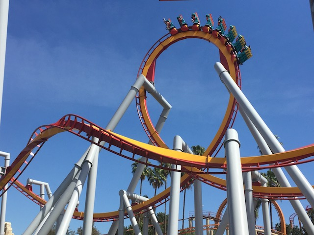
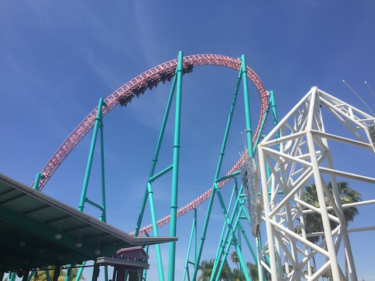
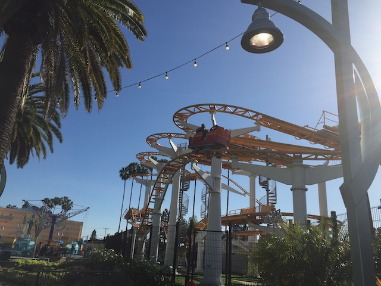
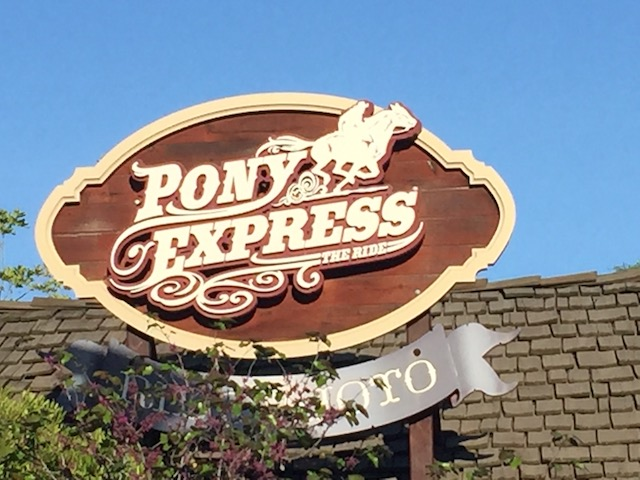
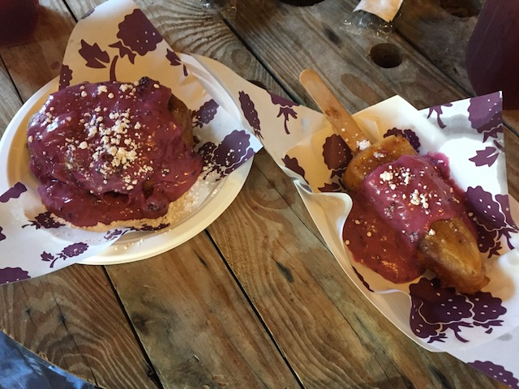

| |
Knotts Boysenberry Festival 2017

All right. Time for another update. We're back at Knotts Berry Farm as once again, the Knotts Boysenberry Festival is back. And I just absolutely love it. My favorite time of year for Knotts Berry Farm. Seriously. I loved doing this both years they had the Boysenberry Festival, and this was my favorite one yet. Knotts Boysenberry Festival topped itself off. Oh, and we also threw in some photos from a couple visits we took beforehand this year, so there's a little bit of bonus stuff before we get to Knotts Boysenberry Festival. For instance, we rode Silver Bullet. Wee.
 Wait. There's something different about Montezoomas Revenge. But I just can't put my finger on it.
Wait. There's something different about Montezoomas Revenge. But I just can't put my finger on it.
 Ooh. They repainted it. It's funny. They started repainting it literally days after my first visit of the year (That was just for fun. There's no photos from then). And it looked like this when we came back. Nice timing.
Ooh. They repainted it. It's funny. They started repainting it literally days after my first visit of the year (That was just for fun. There's no photos from then). And it looked like this when we came back. Nice timing.
 I may not be a big fan of the new...clay color they painted Montezoomas Revenge. I personally don't like it. There's too many reddish orange coasters at Knotts Berry Farm. But I am very happy that they're giving love to Montezoomas Revenge. Especially since before this, there were rumors that they were going to tear down Montezoomas Revenge. So I'm happy that this crushed those rumors.
I may not be a big fan of the new...clay color they painted Montezoomas Revenge. I personally don't like it. There's too many reddish orange coasters at Knotts Berry Farm. But I am very happy that they're giving love to Montezoomas Revenge. Especially since before this, there were rumors that they were going to tear down Montezoomas Revenge. So I'm happy that this crushed those rumors.
Blah! Why should I go see the Ventura Mission that's just downtown! I can go to Knotts Berry Farm and see the model of it instead! =P
 Still one of the best coasters in California. That launch is just so damn powerful.
Still one of the best coasters in California. That launch is just so damn powerful.
Ooh. The garden that replaced Riptide is pretty. But I'm sure something better is coming. =)
 OK. We're with friends from out of state. We have to take them to Mrs. Knotts Chicken Dinner Resteraunt.
OK. We're with friends from out of state. We have to take them to Mrs. Knotts Chicken Dinner Resteraunt.
"Gah! So thirsty! One jug of water isn't going to do it! Bring me a second jug!"
Ooh. I spy water slide construction.
Looking foreward to heading down this water slide complex this summer.
"Hello Kevin. Nice to see...what are you doing with that BBQ Boysenberry Sauce? *squawks in horror* NO!!! I AM NOT ON THE MENU FOR THE BOYSENBERRY FESTIVAL!!! GET THE F*CK AWAY FROM ME YOU MONSTER!!!"
Speaking of the Boysenberry Festival, it's here. Knotts 3rd Annual Boysenberry Festival has begun.
Well, the last park in Southern California has fallen. Now they all have metal detectors. *Sigh* Why do we continue to feed the spectacle of security theater (Pointless measures that make people think they're safer without actually making them safer)? It's not making us safer. Only giving the illusion of it to those who don't know what security theater is is. And yeah. I hate security theater and I've complained about it in much greater detail in past updates. So read that if you want more details on why I hate security theater. But at least they're very fast with the metal detectors here and getting people through them as quickly as possible. So props to Knotts Berry Farm for having good operations at least.
This windmill is not Boysenberry enough for the Boysenberry Festival. Cover it in Boysenberry plants on put it on the menu!
 Can't wait to see what sort of tasty concoctions they've come up with this year.
Can't wait to see what sort of tasty concoctions they've come up with this year.
OK. One huge thing that made this the best Boysenberry Festival of the three. It was so much less crowded this time around. The other two festivals weren't just crowded. They were INSANELY crowded. Some of the busiest times I've ever seen the park. This was just average and not that bad. The line to get the food card was the longest line of the day.
We have our tasting card! Let's get eating!
All right. First up, the Boysenberry Meatballs.
The Boysenberry Meatballs are really good. Really like them. My one recommendation would be to add more of that Boysenberry BBQ Sauce. But still, I'm a big fan of the Boysenberry Meatballs.
Next up is the Boysenberry Frybread. A new item for 2017. And it's really good. Kind of reminds me of a churro, only flat and with Boysenberry sauce. Frybread is good and it's even better when it's Boysenberry flavored.
"Hey Ceaser! I got the Frybread just for you! Approve!" =)
Um...apparently, ABC News is here at Knotts Berry Farm doing a segment on the Boysenberry Festival and all the delicous food you can get and the fun concotions they have. Because yeah. This is the biggest news story. It's not like we're inching closer to war with Syria and North Korea, possibly leading us into World War III. It's not like we're removing all enviromental regulations and allowing big business to pollute everywhere and ruin countless more lives (how many lives are ruined by the bad water in places like Flint MI) so they can make a few extra bucks. It's not like we just recently attempted to ban an entire religion twice and got struck down by the courts twice. It's not like we just tried to take away health insurance from 24 million people (which would kill god knows how many of them) and are continuing to try and take that away. It's not like we're being led by an orange dumbass incompetant fascist buffoon manchild and have been proving ourselves to be an embarassment and a disgrace to the rest of the world on a daily basis for several months. No, the most important thing going on right now is the Boysenberry Festival. So keep on covering it ABC News. Showcase just how delicous the Fun Bun & Fun Stick are. You're currently at the Boysenberry Wings (those are really good). Go see the Boysenberry Festival coverage from ABC News. Or you can just read the Incrediblecoasters coverage of the Boysenberry Festival (what do you think this update is?). Not only do we cover park events like the Boysenberry Festival and showcase all the different foods and critique them, but we also write amusement park reviews, shoot roller coaster videos and photos (You can check out our videos on Youtube and our photos on Instagram), tell stupid jokes, and go off on tangents and random angry rants, like this one. Clearly, we have the best Boysenberry Festival update. Now like and follow us. =)
For the third year in a row, the Boysenberry Wings are on the tasting card. They're the only thing that's been avaliable for all three years.
And I can't blame them. They're freaking amazing. Honestly, I think they might be my favorite Boysenberry item aside from the Fun Bun & Fun Stick. They're just so saucy and good.
Hmm. I wonder what could be inside here.
All right. This is one of the new for 2017 things they had. The Boysenberry Ravioli. This was...interesting to say the least. When you hear something like Boysenberry Ravioli, you're not exactly sure what to think of. Most ravioli is stuffed with some sort of meat or cheese. Yeah, there's pumpkin ravioli. But...Boysenberry Ravioli just seems different. Fruit (Sweet fruit, and pumpkin is not a sweet fruit. Just try taking a bite out of a pumpkin sometime. It won't taste good) and ravioli just don't seem to mix. But...here's Boysenberry Ravioli. And...it's weird. It doesn't taste bad. It just....it's just got this Boysenberry flavor. Mildly sweet, a little good. I think the fact that they had the ravioli in Alfredo sauce didn't exactly help. Maybe if they had the Boysenberry Ravioli and had some sort of special Boysenberry sauce, or something kind of sweet, it'd work. But Alfredo sauce and Boysenberry just don't mix. Again, it's not a bad taste, but it's kind of like oil and water. You taste them seperately. They don't mix and blend and create a new flavor. I'd certainly recommend it simply because...it's unique. There's no other place to get Boysenberry Ravioli. Try something new. I'm not sure if other people like it and I'm going against the flow by saying it's not that good, but I can't say I'm a big fan of the Boysenberry Ravioli.
And after getting the Panna Cotta (there's no photo, but my thoughts on it are the exact same as they were last year. Read last years Boysenberry Festival Update for my take on the Panna Cotta), all that was left was Boysenberry Pizza. The one I was most curious about. I was kind of afraid of this as I thought "This is either going to be really good or really bad." Am I going to love it or am I going to hate it? Well, it turns out the answer is neither. The Boysenberry Pizza is certainly unique. It's not like any other pizza I've had. It's got this Boysenberry Cream Sauce, and is covered with arugula, goat cheese, black forest ham, carmalized onions, almond slices, and drizzled with Boysenberry Siracha. And...it tastes different. I personally prefer regular pizza. But it's still pretty good. The best way for me to describe this pizza is...gimmicky. This feels like a gimmicky pizza. It reminds me of this one pizza place in L.A that is apparently famous for having all sorts of unique kinds of pizza (Never eaten there. Just saw it on the Travel Channel when they aired Pizza Paradise. Think I'll check it out sometime this year. I'm curious to see if it tastes good, and it's in L.A). This seems like one of those weird and wacky pizzas that you eat as a sort of gimmick. It tastes good and you certainly want to try it simply because hey. It's unique. But at the end of the day, regular pizza is better (especially if its pizza from NYC or Italy). I think how much you'd like this pizza really depends on what you think about goat cheese, because you really can taste the goat cheese.

OK. That's enough food. Let's get some more rides on one of our favorites in CA. Xcelerator.
 OK. Why are we paying attention to Boomerang? Well, it turns out that Boomerang is closing at the end of the Boysenberry Festival (Yeah. People were worried about Montezooma closing. Nope. It's Boomerang that's closing). I'm honestly not too surprised that Boomerang is closing. I kind of predicted that it would be removed sometime soon. What I am surprised about is the fact that it's closing in April. That's just weird. I would think that they'd keep it open for the summer and then tear it down in the Fall. That's what I thought they'd do. But nope. Ride it at the Boysenberry Festival and then GONE!!! I can't say I'm sad by this news. Boomerangs are to the roller coaster world what Starbucks is to the coffee world, and they aren't even that good. Plus, the Knotts Boomerang was one of the worse ones. We constantly ignored it for most of our visits. Even when we were here, the park is empty, and we're just riding random rides. We'll ride the Flyers. We'll ride the Teacups. We'll ride...the train. But nope. Just keep walking. Ignore Boomerang. Not riding that today. The last time I rode Boomerang (excluding today) was New Years Eve 2014. That's a lot of ignoring Boomerang. So let's just get our last ride and then things'll go back to normal.
OK. Why are we paying attention to Boomerang? Well, it turns out that Boomerang is closing at the end of the Boysenberry Festival (Yeah. People were worried about Montezooma closing. Nope. It's Boomerang that's closing). I'm honestly not too surprised that Boomerang is closing. I kind of predicted that it would be removed sometime soon. What I am surprised about is the fact that it's closing in April. That's just weird. I would think that they'd keep it open for the summer and then tear it down in the Fall. That's what I thought they'd do. But nope. Ride it at the Boysenberry Festival and then GONE!!! I can't say I'm sad by this news. Boomerangs are to the roller coaster world what Starbucks is to the coffee world, and they aren't even that good. Plus, the Knotts Boomerang was one of the worse ones. We constantly ignored it for most of our visits. Even when we were here, the park is empty, and we're just riding random rides. We'll ride the Flyers. We'll ride the Teacups. We'll ride...the train. But nope. Just keep walking. Ignore Boomerang. Not riding that today. The last time I rode Boomerang (excluding today) was New Years Eve 2014. That's a lot of ignoring Boomerang. So let's just get our last ride and then things'll go back to normal.
Oh look. Boomerang is closed. Guess we'll never ride it again. What a shame. =)

Oh, and Coast Rider just got new shin guards. Lovely.
Hey look! I got a new high score on Voyage to the Iron Reef! =)
Yeah. I know that high score still isn't that good, but it's at least average. I suck at rides like this and I'm just happy to get an average score when I do. Maybe if I practice enough, I'll eventually get a good score.
 You know, you shouldn't stand and walk around after eating a bunch of food. Perhaps you should "SIT DOWN!!!!".
You know, you shouldn't stand and walk around after eating a bunch of food. Perhaps you should "SIT DOWN!!!!".
I see that people are still willing to throw away perfectly good money for no apparent reason.
 Well, Boomerang opened back up. Time for us to take our last ride.
Well, Boomerang opened back up. Time for us to take our last ride.
 Hmm. It was running OK (by Boomerang standards). But hey. If I crave a ride on a Boomerang, I'll just drive up to NorCal and ride it at SFDK, or I'll just ride it when I travel to new parks and have to get that new Boomerang credit (there are several more Boomerangs around the globe for me to ride still). Not sure if this Boomerang is getting scrapped, or if it'll find a home at some random park in Asia. I keep hearing rumors that Cedar Fair just might send this ride to Michigan (probably as punishment for their role in last years election, LOL). Poor Michigan's Adventure, getting the short end of the stick yet again.
Hmm. It was running OK (by Boomerang standards). But hey. If I crave a ride on a Boomerang, I'll just drive up to NorCal and ride it at SFDK, or I'll just ride it when I travel to new parks and have to get that new Boomerang credit (there are several more Boomerangs around the globe for me to ride still). Not sure if this Boomerang is getting scrapped, or if it'll find a home at some random park in Asia. I keep hearing rumors that Cedar Fair just might send this ride to Michigan (probably as punishment for their role in last years election, LOL). Poor Michigan's Adventure, getting the short end of the stick yet again.

*gasp* We've gone way too long in a Knotts Berry Farm update without bringing up that "PONY EXPRESS IS THE BEST RIDE EVER!!!!".
It's not a visit to Knotts Boysenberry Festival without getting two of the most filling desserts ever. The Fun Bun (Deep Fried Cinnamon Roll with Boysenberry Cream Cheese and drizzled in Boysenberry Sauce) and the Fun Stick (Deep Fried Cheesecake drizzled in the Boysenberry Sauce on a stick).

Both incredibly good and my favorite items at the BoysenberryFestival. They're just so filling. Seriously, 3 people could not finish both items. It was too much. And this is super good food. It's just so rich. So filling. Oh, and sorry everyone else. But the Fun Stick > Fun Bun. I'm standing by that Evan. Fight me! ;)
And of course, we have to try the Boysenberry Cream Soda as well. It's really good. Kind of like they took regular cream soda, and then poured the Boysenberry Concentrate inside and mixed it around. So if you're a Boysenberry Fan, you'll enjoy the Boysenberry Cream Soda. And that's our Knotts Boysenberry Festival update for 2017. I want to thank Knotts Berry Farm for not only having another great Boysenberry Festival, but for improving upon it. They have many great Boysenberry foods such as Boysenberry Wings, Meatballs, Frybread, Cream Soda, and the Fun Bun & Fun Stick. And even though I may not be the biggest fan of the Boysenberry Ravioli and Pizza, I still want to applaud Knotts for trying something new and different. I mean, who would've thought of Boysenberry Ravioli before this Boysenberry Festival? The food at the festival makes Knotts Berry Farm rival parks like Silver Dollar City and Dollywood and will land Knotts Berry Farm a high spot on our Top 10 Theme Park Dining Options List. So if you're planning on doing Knotts in the Spring, make sure you go in April for the Boysenberry Festival.
Home
|